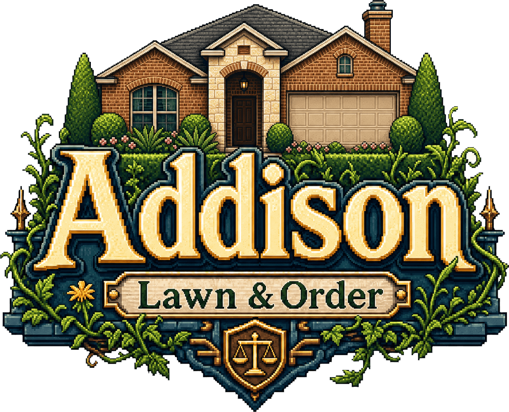

Findings
Route Sheet
Shift—
Inspection—
Strikes0 / 3
Bank Account$0
—
—
Case File
—
—

The script never executed. The usual cause is opening this file
directly from disk — browsers block ES modules over
file://,
so nothing runs and you get an empty desk.
Serve it over HTTP instead:
npm run build && npm run serve
then open http://localhost:8123